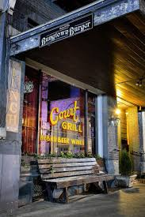
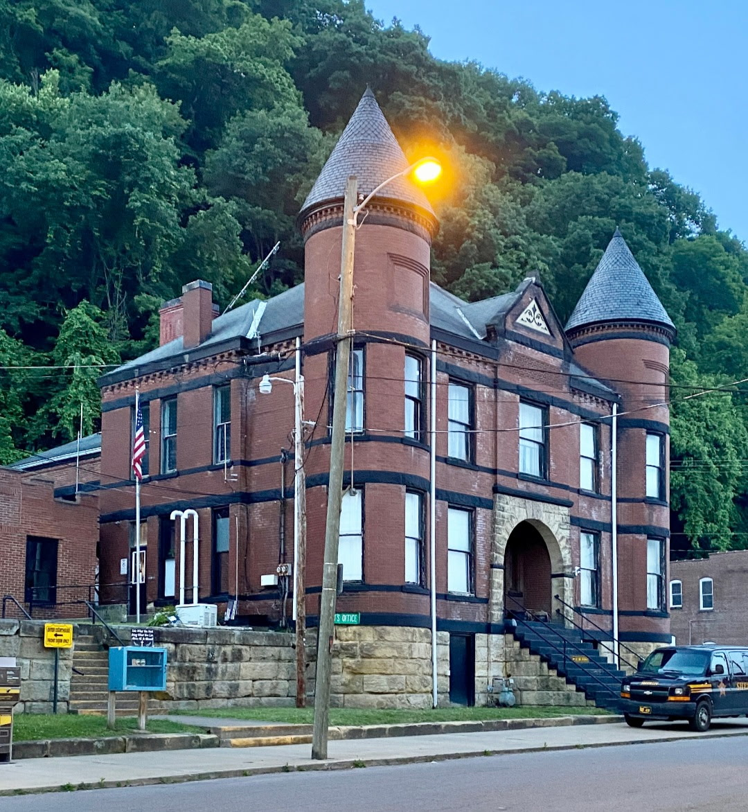
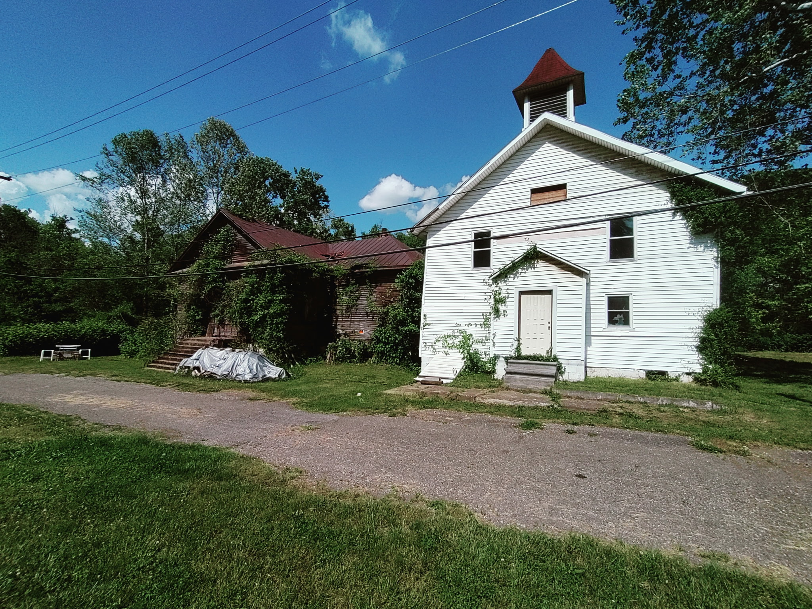
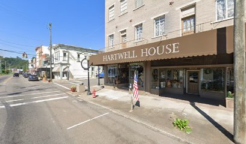
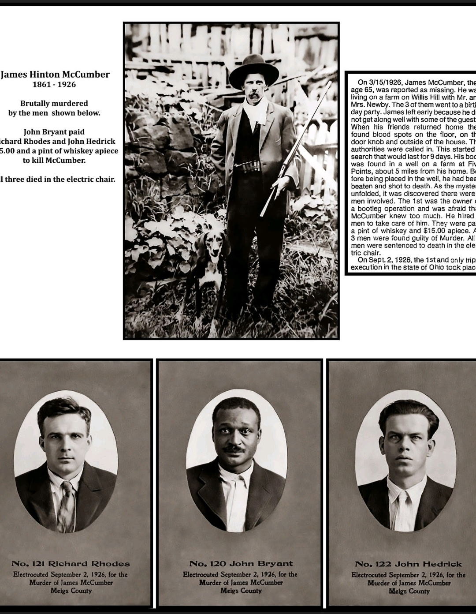
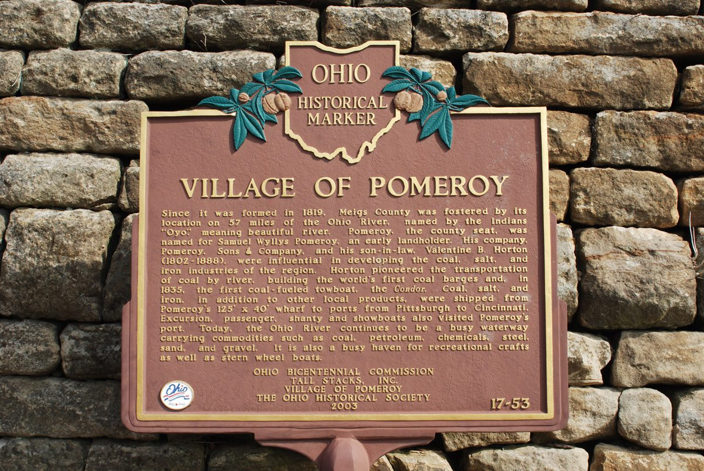
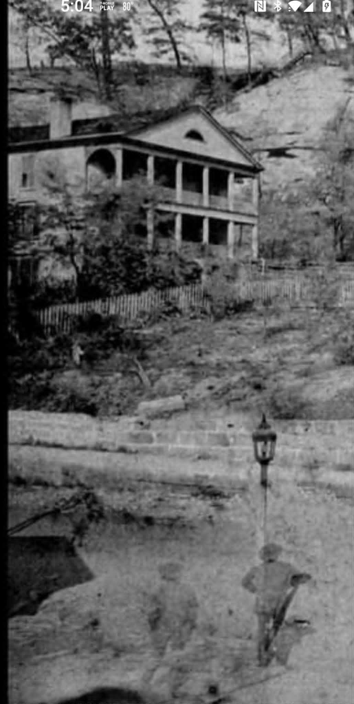

Where we bgin
Pomeroy, Ohio · On the banks of the river
Pomeroy. Where the river keeps its secrets and the dead keep their addresses.
The Story Behind the Lantern
Pomeroy is unlike any town on the Ohio. They call it the Skinny City — nearly a mile of 19th-century storefronts pressed shoulder to shoulder against the hillside, with the river lapping at the doorsteps across the way. There was never room to spread out. So the town simply stacked its history on top of itself, year after year, flood after flood.
And when a place holds that much memory in so narrow a space, some of it refuses to leave. Behind the ornate brick facades and the tarnished gold lettering, residents have whispered for generations about footsteps on empty stairs, lanterns that move with no hand to carry them, and a woman in mourning black who walks the waterline at dusk.
Intentionally left blank
Stops Along the Walk
Every stop, a story. Every block, a hundred years of history.




Add a real local stop — your favorite story, the grand finale of the walk.
Before You Walk With Us
Duration
60 to 90 minutes
Meeting Point
112 Court St Pomeroy, OH between river roasters and court grill
Nights
October 3, 10, 17, 24 — Saturdays only starting at 7:30 P.M.
Distance
Less than a mile.
The Wanderer
$15/person
Pomeroy History








Through a small part of the village along the Ohio river. The walk is about approximately an hour to an hour and a half. We will visit small businesses and haunted house along the way.